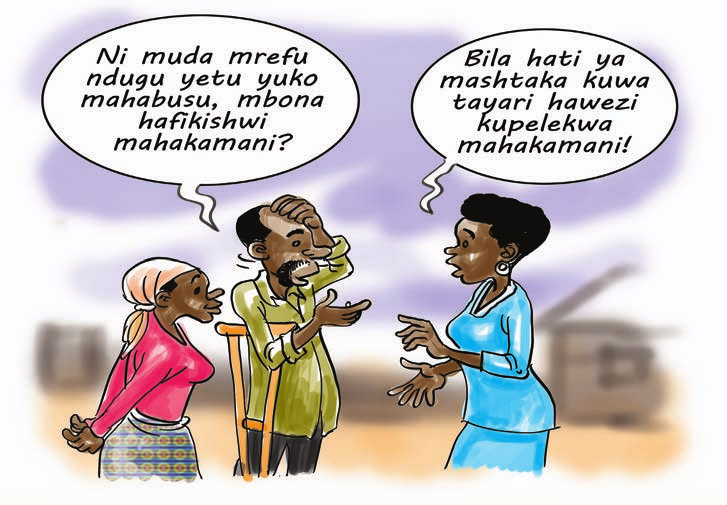

Kujenga uwezo wa washiriki kufahamu haki za raia katika mfumo Jinai na taratibu za kufuata kulinda haki hizo
Baada ya kumalizika mada hii washiriki watafahamu;
Mfumo wa jinai unaongozwa na taratibu, kanuni na sheria mbalimbali zilizowekwa na kukubalika katika jamii zitumike kuingoza jamii. Taratibu, kanuni na sheria hizi zimeweka makatazo mbalimbali ambayo yakikiukwa hutengeneza kosa la jinai. Hivyo, kosa lolote linalohatarisha usalama wa raia na mali zao; usalama wa mali na mamlaka za umma; amani na utulivi wa nchi na ni kosa ambalo limetamkwa bayana kuwa ni kosa katika sheria, kanuni au taratibu mbalimbali zinazojumuisha makosa ya jinai.
Kutokana na ukweli huu, utekelezaji na usimamizi wa taratibu, sheria na kanuni hufanywa na vyombo vya jamii au nchi katika mfumo uliowekwa na jamii. Vyombo hivi huitwa ni vyombo vya dola vikijumuisha Mgambo na Sungusungu, Jeshi la Polisi, Taasisi ya Kuzuia na Kupambana na Rushwa (TAKUKURU), Usalama wa Taifa, Jeshi la Uhamiaji, Ofisi ya Mwanasheria Mkuu wa Serikali, Mkurugenzi wa Mashitaka, Mamlaka za Serikali za Mitaa, Wizara zote za serikali na idara zingine zote chini ya Serikali, Mahakama na Magereza.
Katika nchi ya Tanzania, nchi za Afrika ya Mashariki, na nchi nyingi zilizopo katika jumuiya ya madola makosa mengi ya jinai yameorodhoshwa katika sheria ya Sheria ya Kanuni za Adhabu. Pamoja na Sheria ya Kanuni za Adhabu, kuna sheria na taratibu zingine zinazoonesha makosa ya jinai kulingana na utaratibu uliowekwa. Hapa kwetu Tanzania, Sheria ya Kanuni za Adhabu ipo katika Sura ya 16 ya sheria za nchi. Kwa hiyo kosa la jinai linahusisha kutenda au kutotimiza wajibu katika jambo lolote kinyume na sheria au taratibu zilizowekwa na jamii au nchi.
Makosa ya jinai nchini Tanzania yanatokana na vyanzo mbalimbali vya sheria na kanuni. Vyanzo hivi hutumika kulingana na maelekezo au mwelekeo wa kanuni au sheria uliyomo ndani yake. Sheria na kanuni hizo ni hizi zifuatazo:
| Jinai | Madai |
|---|---|
| 1. Kosa hutajwa katika Sheria za Kanuni za Adhabu | Kutoelewana kwa pande mbili katika makubaliano kadhaa. |
| 2. Mlalamikiwa anaweza kukamatwa na vyombo vya dola au mtu yeyote na kutiwa nguvuni mpaka pale atakapopata dhamana. | Mlalamikaji peke yake anaweza kufikisha lalamiko lake mbele ya vyombo vya maamuzi. |
| 3. Mlalamikaji ni Jamhuri (polisi, TAKUKURU, Mwendesha Mashitaka, au Mwanasheria wa Serikali, kwa niaba ya mtendewa kosa. | Mlalamikaji yeye mwenyewe au kupitia wakili wake ni mdaawa katika makubaliano |
| 4. Utekelezaji wa kanuni, sheria na taratibu hufanywa na vyombo vya dola ambavyo ni mgambo au sungusungu, polisi, TAKUKURU, Usalama wa Taifa na serikali. | Utekelezaji wa makubaliano hufanywa na wadaawa wa mkataba au makubaliano. |
| 5. Mshitakiwa au mwenye hatia katika kosa hukabiliwa na adhabu ya ama onyo, viboko, faini, kifungo n.k. | Mdaawa aliyekiuka makubaliano hulazimika kutekeleza makubaliano | 6. Mshitakiwa ni yule aliyetenda kitendo cha jinai, aliyesaidia kutendeka kwa kosa la jina, aliyeshawishi kutendeka kwa koa la jinai au aliyekwepa kuzuia kutotendeka kwa kosa la jinai. | Ni mdaawa au mwathirka aliye kwenye makubaliano |
Jeshi la polisi nchini, limepewa mamlaka ya kulinda na kusimamia usalama wa raia na mali zao. Pamoja na jukumu hili, jeshi la polisi lina majukumu makubwa kama ifuatavyo;
Kimsingi kila raia au mtuhumiwa ana haki mbele ya vyombo vya dola pale anapotuhumiwa kutenda kosa la jinai. Haki za raia au mtuhumiwa zinaongozwa na kanuni mbalimbali zinazosimamia makosa ya jinai kama zilivyoorodheshwa kwenye Katiba ya Jamhuri ya Muungano wa Tanzania ya mwaka 1977, Sheria ya Kanuni za Adhabu, Sura ya 16, na katika Sheria ya Mwenendo wa Makosa ya Jinai ya mwaka 1985 na sheria zingine zinazotaja makosa ya jinai. Kanuni hizo zinasema;
Sehemu hii inajadili utaratibu wa uendeshaji wa mashauri ya makosa ya jinai mahakamani ikiwa ni pamoja na kujadili haki na wajibu wa mtuhumiwa kwa ujumla. Sheria kuu inayoratibu uendeshaji wa mashauri ya makosa ya jinai hapa Tanzania katika mashauri yanayohusu watu wazima iko chini ya Sheria ya Mwenendo wa Makosa ya Jinai ya mwaka 1985 (Sura ya 20).
Zipo sheria nyingine mbalimbali ambazo zinahusiana na uendeshaji wa mashauri ya makosa ya jinai. Hali kadhalika, ili kukamilisha utaratibu wa uendeshaji wa mashauri ya jinai kuna Sheria ya Ushahidi ya mwaka 1967, Sura namba 6 ya sheria za Tanzania inayoelekeza aina ya ushahidi, taratibu za kutoa ushahidi, taratibu zote kuhusu ushahidi.
Hata hivyo, taratibu za kuendesha mashauri ya makosa ya jinai yanayohusu watu wazima zinapaswa kuwa tofauti na taratibu zinazotumika kwenye mashauri ya watoto. Sheria ya Mtoto ya Mwaka 2009 inaelezea utaratibu wa kuendesha mashauri ya watoto.
Kwa maana hiyo, sehemu hii itajadili, pamoja na mambo mengine, mambo yafuatayo hatua kwa hatua:
Taratibu za nchi kupitia sheria mbalimbali zimeweka bayana mtu au chombo chenye mamlaka ya kumtia mtu nguvuni. Kwa mujibu wa taratibu za nchi ya Tanzania, wafuatao ndio wenye mamlaka ya kumtia mtu nguvuni:
Kwa kawaida, mtuhumiwa anakuwa ametiwa nguvuni pale atakapozuiliwa na polisi na kuondolewa haki yake ya kwenda atakako. Lengo kuu la kufanya hivyo ni kumweleza mtuhumiwa kosa analotuhumiwa nalo na pia kutoa mwanya kwa mamlaka yaani polisi au chombo kingine kama vile TAKUKURU kufanya upelelezi wa kutendeka kwa kosa la jinai.
Mtuhumiwa anapokuwa ameshukiwa kuhusika katika kutenda kosa, na wakati askari polisi anapokuwa akifanya kazi ya upelelezi wa kosa la jinai anayo mamlaka ya kumzuia mtuhumiwa kwenda atakako hata kama polisi anayehusika na zoezi hilo hana uhakika kama mtu anayemzuilia ametenda kosa husika au anahusika katika kosa hilo.
Mtu atahesabika kuwa ametiwa nguvuni ikiwa atazuiliwa kuondoka na kwenda atakako kutokana na kuwa nguvuni; au kutendeka kwa kosa la jinai na polisi anaamini kwamba mtu huyo ametenda kosa hilo la jinai. Katika mazingira haya, sheria inampa polisi mamlaka ya kumkamata mtu huyo bila ya kuwa na hati ya kumkamata.
Mazingira yafuatayo yanampatia mtu binafsi au askari polisi haki ya kumkamata mtuhumiwa bila ya kuwa na hati ya kukamata (Warrant of Arrest)
Endapo mtuhumiwa atakamatwa na raia, basi ni wajibu wa raia kumfikisha mtuhumiwa mbele ya kituo cha polisi haraka iwezekanavyo.
Kwa mujibu wa sheria za mfumo jinai ikiwamo Sheria ya Mwenendo wa Makosa ya Jinai ya Mwaka 1985 (Sura ya 20), mtu atatiwa nguvuni na polisi au na mtu mwingine kwa kitendo cha kumgusa bega, mkono au kwa kumzuia kuondoka kwenda sehemu anayotaka. Kama mtuhumiwa atakaidi kutiwa nguvuni, au anatumia nguvu, au akitaka kutoroka basi njia yeyote halali na ya kufaa, kulingana na mazingira itatumika kumtia nguvuni. Wakati wa kumkamata mtuhumiwa, hatakiwi kuteswa au kuwekwa kwenye mazingira au hali ngumu zaidi ya kumzuia asitoroke.
Ni muhimu kutambua kwamba askari polisi au mtu yeyote anayekamata anatakiwa ajitambulishe kwa mtuhumiwa kwa kutaja Jina Lake, hata kituo anachofanyia kazi na kutoa kitambulisho cha kazi.
Mwezeshaji eleza kuwa askari polisi au mtu yeyote anayekamata mtuhumiwa haruhusiwi kutumia nguvu au/na silaha, au kumdhalilisha mtuhumiwa zaidi ya kuhakikisha kwamba anamkamata na anamzuia kutoroka. Kwa maana nyingine, askari polisi haruhusiwi kufanya jambo lolote ambalo linaweza kusababisha maumivu, majeraha makali na hata kifo kwa mtuhumiwa isipokuwa kama itaonesha na yeye kuamini kwa dhati kwamba kufanya hivyo atakuwa amelinda na kuhifadhi maisha au kuzuia madhara makubwa binadamu.
Sheria inampa polisi wakati wa kufanya upelelezi au uchunguzi wa makosa ya jinai, mamlaka ya kufanya upekuzi katika nyumba za kuishi watu, ofisi, magari, vyombo vyovyote au maeneo yeyote kama atakuwa na sababu za msingi kufanya hivyo.
Kwa mujibu wa sheria ya makosa na mwenendo wa makosa ya jinai kazi ya upekuzi hufanyika baada ya kutolewa hati maalumu ya upekuzi. Mkuu wa kituo cha polisi chochote ndiye mwenye mamlaka ya kutoa hati ya upekuzi ili kuruhusu zoezi la upekuzi kufanyika.
Upekuzi wowote chini ya sheria hutakiwa ufanyike kwa mujibu wa vigezo vifuatavyo, hali na mazingira yafuatayo:
Upelezi wa makosa ya jinai hufanywa na jeshi la polisi kupitia askari maalumu wenye utalaamu wa kufanya kazi hiyo. Katika hatua ya kufanya upelelezi askari polisi wanayo mamlaka ya kufanya mahojiano na kupata habari kuhusiana na kutendeka kwa kosa la jinai. Kiutaratibu, mahojiano hufanyika kwa mdomo na kunakiliwa kimaandishi, na baada ya mahojiano mtoa maelezo anapaswa kutia sahihi yake kwenye maelezo hayo.
Endapo maelezo yaliyotelewa yanaendana na kutendeka kwa kosa basi maelezo hayo pamoja na mtoa maelezo yatatumika katika ushahidi upande wa mashitaka pindi shauri hilo litakapofikishwa mahakamani.
Jeshi la Polisi lina mamlaka ya kuitisha gwaride la utambulisho kwa shahidi kuwatambua watuhumiwa kama watuhumiwa hawakujisalimisha polisi na kukubaliwa kuwa wao wamehusika katika kutenda kosa.
Zifuatazo ni haki za mtuhumiwa wakati wa mahojiano mikononi mwa askari polisi;
Askari polisi wanayo mamlaka kutoa dhamana kwa mtuhumiwa kuwa nje ya kizuizi. Vigezo vifuatavyo hutumika kutoa dhamana;
Hata hivyo, dhamana inayotolewa na jeshi la polisi haihusiani na kuweka dhamana mali au pesa zake na inaweza kuambatana na masharti yafuatayo:
Kama itatokea askari polisi kukataa kutoa dhamana kwa mtuhumiwa basi watatoa sababu za kukataa kimaandishi. Hali kadhalika, endapo askari polisi watakuwa wametoa dhamana lakini mtuhumiwa akashindwa kutimiza masharti ya dhamana, wanayo haki ya kumfikisha mtuhumiwa mahakamani haraka iwezekanavyo.
Dhamana ya polisi inaweza kufutwa na mkuu wa kituo cha polisi husika kama itathibitika kwamba;
Mtuhumiwa anayevunja kwa makusudi masharti ya dhamana akiwa nje kwa dhamana anakuwa ametenda kosa la jinai na akipatikana na hatia atawajibika kutumikia adhabu ambayo si zaidi ya adhabu ya kosa aliloshitakiwa nalo awali kabla ya kuvunja masharti ya dhamana yake.
Mashitaka au shauri la jinai linaweza kufikishwa mahakamani kwa njia zifuatazo;
Mtu yoyote ambaye anaamini kwamba mtu fulani ametenda kosa la jinai, anaweza kufikisha malalamiko hayo mahakamani. Hakimu ambaye malalamiko yatafikishwa kwake anatakiwa kutayarisha hati ya mashitaka au kuelekeza kuandaliwa kwa hati ya mashitaka na polisi au chombo chenye mamlaka ya kuandaa hati ya mashitaka.
Askari polisi au chombo chochote cha dola chenye mamlaka kama TAKUKURU kinawajibu kuandaa hati ya mashitaka na kumfikisha mahakamani mtuhumiwa aliye chini ya ulinzi wake.
Kama tulivyoona hapo juu, polisi, chombo cha dola kama TAKUKURU au Hakimu kina wajibu wa kuandaa hati ya mashitaka. Hivyo, hati ya mashitaka lazima iwe na sehemu zifuatazo:
Mahakama ina mamlaka ya kuamuru kubadilishwa kwa Hati ya Mashitaka pale itakapoona inafaa, kabla ya hukumu haijatolewa katika mazingira yafuatayo;
Mshitakiwa ana haki ya kukiri au kukana mashitaka mapya atakayoshitakiwa nayo baada ya kubadilishwa kwa hati ya mashitaka. Kwa hali hiyo, mtuhumiwa ana haki ya kuomba na kupata nakala ya Hati ya Mashitaka ili aweze kuelewa mashitaka dhidi yake na kupata msaada wa kisheria.
Kwa mujibu wa Sheria ya Mwenendo wa Makosa ya Jinai ya mwaka 1985, mtuhumiwa au mshitakiwa ana haki ya kupata dhamana isipokuwa katika makosa yafuatayo;
Hata hivyo, katika makosa mengine mbali na hayo hapo juu kuna mazingira mengine yanayoweza kumnyima mtuhumiwa dhamana. Mazingira hayo ni kama;
Dhamana inayotolewa na mahakama inaweza kuambatana na masharti yafuatayo;
Kabla mtu hajapata dhamana lazima atimize masharti ya dhamana ambayo ni pamoja na
Ni wajibu wa mdhamini kuhakikisha kwamba mtuhumiwa au mshitakiwa anayedhaminiwa;
Mahakama kuu ina mamlaka ya kubadilisha masharti ya dhamana ambayo yamewekwa na Mahakama za chini na kumpa dhamana mtuhumiwa ambaye atakuwa amekataliwa dhamana na mahakama za chini. Kinachotakiwa ni kufikisha maombi hayo Mahakama Kuu yakiwa ni rufaa dhidi ya uamuzi wa mahakama za chini kukataa kutoa dhamana au yakiwa ni maombi ya mapitio.
Katika mashauri ya jinai zipo pande tatu zinazohusika katika kuendesha na kusikiliza shauri. Pande hizo ni;
Upande wa mahakama huongozwa na hakimu pamoja na wasaidizi wake, mahakama husika na usikilizaji wa shauri na kisha kutolea maamuzi shauri lililo mbele yake kulingana na uzito wa ushahidi.
Upande wa mashitaka ni Jamhuri, yaani Serikali na vyombo vyake ambavyo ni pamoja na Polisi, TAKUKURU, Ofisi ya Mkurugenzi wa Mashitaka, Ofisi ya Mwanasheria Mkuu wa Serikali au taasisi yoyote yenye mamlaka ya kuendesha mashitaka, mwathirika wa kosa la jinai, pamoja na mashahidi watakaounga mkono mashitaka.
Upande huu unahusisha mtuhumiwa na mashahidi wake ambao watamsaidia katika utetezi wake kwa kukanusha mashitaka dhidi yake. Kazi ya utetezi inaweza kufanywa na mtuhumiwa mweneywe au wakili wake atakayempata kutoka kwa mawakili binafsi.
Katika kusikiliza shauri la jinai mahakamani upande wa mashitaka ndio wenye wajibu wa kuaanza kwa kumsomea mshitakiwa shitaka linalomkabili kama lilivyoandaliwa kwenye hati ya mashitaka. Baada ya shitaka kusomwa mbele ya mshitakiwa, mshitakiwa hupaswa kujibu kwa ama kukiri kutenda kosa, au kukana kutenda kosa.
Mtuhumiwa akikiri kosa, hakimu atamuuliza mara kadhaa kuhakikisha kauli ya kukiri kisha atanukuu maneno ya kukiri kwa mtuhumiwa katika lugha nyepesi na fasaha ambayo inawakilisha kwa karibu sana yale aliyosema mtuhumiwa na kisha atamtia hatiani mtuhumiwa kwa kosa alilolikiri na kisha kutoa adhabu yeyote kulingana na sheria na taratibu za kimahakama.
Endapo mshitakiwa atakana shitaka lililosomwa mbele yake, mahakama itanukuu maneno ya kukana shitaka na kuutaka upande wa mashitaka kuendelea na mashitaka dhidi ya mshitakiwa ikiwa ni pamoja na hatua za kuita mashahidi na kutoa ushahidi kwa kadri ya mashahidi na ushahidi walionao.
Wakati mashahidi wa upande wa mashitaka wakitoa ushahidi, upande wa utetezi unaruhusiwa kuwauliza maswali mashahidi upande wa mashitaka kwa mujibu wa taratibu za kimahakama ili kupunguza uzito na kuondoa ukweli katika ushahidi huo, au kutilia shaka ushahidi huo na hatimaye kudhoofisha mashitaka. Hali hii husaidia mahakama kupima uzito wa ushahidi dhidi ya mtuhumiwa.
Kitaalamu, uulizaji maswali kutoka upande wa utetezi wakati mashahidi wa mashitaka ukitoa ushahidi hujulikana kama usaili-mtambuka (cross-examination). Kama mshitakiwa anauwakilishi kama vile wakili, wakili huuliza maswali; na kama mtuhumiwa hana uwakilishi, yeye mwenyewe hufanya kazi ya usaili mtambuka.
Kiwango cha kuthibitisha kosa katika makosa ya jinai (tuhuma) dhidi ya mshitakiwa ni uthibitisho ambao hauna mashaka yeyote au kwa kifupi ni uthibitisho pasipo shaka yeyote. Kama kuna uthibitisho lakini uthibitisho huo unaacha au kuleta mashaka kadhaa, basi upande wa mashitaka huhesabiwa kuwa umeshindwa na mtuhumiwa kuachiwa huru.
Mwezeshaji fafanua kuwa zipo kinga mbalimbali kisheria anazoweza kuzitumia mshitakiwa katika utetezi wa shauri la jinai. Kinga hizo ni pamoja na;
Utetezi huu utakubalika tu endapo hali hiyo alikuwa nayo huyo mtu wakati anafanya hilo kosa la jinai na sio vinginevyo. Tatizo hilo la ugonjwa wa akili litakubalika ikiwa mtendaji alikuwa katika mazingira yafuatayo;
Mazingira ambayo utetezi huu au kinga hii inaweza kutumika katika shauri la jinai ni lazima kuwepo na ushahidi wa kuthibitisha kwamba mtuhumiwa alikuwa na matatizo ya akili wakati anatenda kosa hilo na si baada ya kutendeka hilo kosa.
Mtu anaweza kutenda kosa akiwa katika msukumo wa ulevi na hivyo kutotambua anachokifanya. Hali hii inaweza kuwa utetezi na kinga dhidi ya kosa la jinai endapo itathibitishwa kwamba wakati anatenda kosa alikuwa amelewa kwa kiwango cha kutoweza kujitambua au kutambua kama analolifanya ni kosa chini ya sheria.
Utetezi huu utakubalika tu katika mazingira yafuatayo:
Mtu yeyote aliye chini ya umri wa miaka 10 hawajibiki kwa tendo lolote la jinai analotenda na anakuwa hana hatia kwenye makosa yote ya jinai. Hali kadhalika mtoto wa kiume mwenye umri wa miaka 12 yaani kumi na mbili au chini yake, hatakuwa na kosa la jinai kwenye makosa ya kujamiiana.
Matumizi ya nguvu ya kujihami au kujilinda yanakubalika kuwa kinga au utetezi dhidi ya kosa la jinai. Hata hivyo, matumizi ya nguvu yatategemea nguvu inayotumiwa na watuhumiwa dhidi ya kitisho chochote dhidi yao. Kwa hiyo, nguvu itakayotumika ni lazima iwe na uwiano na madhara yeyote dhidi ya mtuhumiwa.
Kitendo cha mtuhumiwa kushurutishwa au kulazimishwa kutenda kosa la jinai na mtuhumiwa mwingine au zaidi ni utetezi tosha. Hata hivyo ni lazima ionekane kwamba watuhumiwa wenzake walimtishia na walikuwa na nia ya kumjeruhi vibaya au kumuua kama asingefanya walivyomtaka kutenda. Hata hivyo, vitisho vyovyote vya baadaye yaani vinavyotarajiwa si utetezi kisheria.
Mtuhumiwa aliyewahi kushtakiwa na kuadhibiwa kwa kosa hilohilo ni utetezi kwa sababu mtu hatashitakiwa mara mbili baada ya kutuhumiwa kwa kosa lilelile.
Mtu hatashitakiwa kwa kosa ambalo alishashitakiwa nalo akaachiwa huru kwa kutopatikana na hatia au kwa sababu nyingine ya msingi itakayotolewa na upande wa mashitaka. Kwa mfano, kutolewa na kuwasilishwa hati toka kwa Mkurugenzi wa Mashitaka kwamba upande wa mashitaka yaani Jamhuri hauna nia ya kumshitaki mtuhumiwa kwa kosa hilo (nolle prosequi).
Mtuhumiwa atakuwa na kinga endapo atathibitisha mahakamani kwamba wakati kosa la jinai analoshitakiwa likitendeka hakuwepo kwenye eneo la tukio kwa sababu zozote zile ikiwa ni pamoja na safari au vinginevyo.
Kama tulovyoaainisha hapo awali kwamba kutokujua sheria sio kinga dhidi ya kosa la jinai. Hata hivyo, kutokujua sheria kunaweza kuwa kinga katika utetezi, endapo kutakuwa na sheria husika itakayotamka bayana kwamba kutokujua sheria ni kinga.
Kuna makosa mengine ya jinai, kama vile ajali ya gari, hutokea nje ya uwezo wa mtuhumiwa. Kwa hiyo, endapo mtuhumiwa atathibitisha kwamba kosa lililofanyika, lilifanyika nje ya uwezo wake, na kinyume cha matakwa yake, na si kwa uzembe au limetokana na ajali iliyo nje ya uwezo wake kuizuia na si kwa makusudi, basi huo utakuwa utetezi wake.
Kughadhabishwa au kukasirishwa ni kitendo chochote ambacho si halali mbele ya watu wa kawaida katika jamii au kutendewa kitendo ambacho hupandisha hasira mara moja na kupelekea mtuhumiwa kutenda kosa wakati huo huo kutokana na kutolewa kwa ama maneno ya kashfa kama vile matusi au kutendewa kitendo cha kashfa. Kughadhabishwa au kukasirishwa kunakotokea wakati huo huo na kupelekea kutenda kosa la jinai wakati huo huo kunaweza kuwa utetezi na kinga katika makosa jinai na hivyo kupelekea kutuhumiwa kutenda kosa bila kukusudia au kutokukusudia.
Maneno au matendo ya kashfa ni lazima yatimize kigezo cha kumwondolea mtu wa kawaida uwezo wa kujizuia na kumshurutisha bila kupenda, kutenda kosa la jinai la shambulio dhidi ya mtu anayetoa au kufanya hayo matendo. Hata hivyo kughadhibishwa au kukasirishwa sio kinga katika utetezi iwapo:
Kuchukua au kufanya kitendo au kutokufanya jambo lolote kwenye kitu au mali yako halali toka kwa mtu mwingine aliyenayo. Kitendo hicho lazima kifanyike bila udanganyifu au ulaghai wa aina yoyote. Mfano, kutuhumiwa kwa wizi wa radio wakati ambapo radio hiyo ni mali yako.
Kabla upande wa utetezi haujaanza kutoa ushahidi wake, mahakama hupaswa kupima na kuridhika kwamba kweli upande wa mashitaka umetoa ushahidi unaothibitisha kwamba mshitakiwa ana shauri la kujibu, na kama hatajibu basi ushahidi wa upande wa mashitaka unatosha kumtia hatiani na hatimaye kumpatia adhabu kwa mujibu wa sheria.
Kama mtuhumiwa mwenyewe au wakili wake ataona kwamba upande wa mashitaka umetoa ushahidi dhaifu ambao hauwezi kuthibitisha tuhuma dhidi yake, anaweza kuiomba mahakama itamke kwamba hana hatia kwa kuwa hana shauri la kujibu. Mahakama itapima hoja hiyo na itakapoona kwamba maelezo ya upande wa mshitakiwa ni sahihi na ni kweli kwamba hayawezi kutosha kumtia hatiani, basi itatoa uamuzi kwamba mshitakiwa hana hatia dhidi ya mashitaka yanayomkabili na kumwachia huru.
Mahakama itakapokuwa imesikiliza ushahidi wa upande wa mashitaka na kuridhika kwamba mshitakiwa anatuhuma (Mashitaka) ya kujibu na kama asipopewa fursa ya kujitetea anaweza kupatikana na hatia, basi mahakama itamwelewesha mshitakiwa na kumkumbusha mashitaka dhidi yake, pamoja na kumweleza haki zake za kujitetea yaani kukanusha tuhuma dhidi yake. Anaweza kufanya hivyo kwa;
Baada ya kusikiliza mashahidi na ushahidi wa pande zote, mahakama itatoa uamuzi ambao ni ama;
Baada ya mahakama kumtia hatiani mshitakiwa, na kabla ya mahakama kutoa adhabu hutoa mwanya wa maombi kwa pande zote ya ama kupunguza adhabu au kutoa adhabu kama ilivyo kwenye sheria. Miongoni mwa sababu ambazo mahakama inaweza kuzikubali kupunguza adhabu ni pamoja na mshitakiwa kutenda kosa kwa mara ya kwanza, au ni mdhoofu wa ugonjwa ama umri mkubwa. Kadhalika, mojawapo ya sababu za upande wa mashitaka kuhakikisha mtuhumiwa anapata adhabu kali ni pamoja na tabia ya mtuhumiwa kurudia rudia kosa husika ambalo ni kero katika jamii na kuwa kama fundisho kwa wengine.
Kwa mujibu wa sheria za makosa ya jinai na sheria mbalimbali zinazoelezea adhabu mbalimbali, adhabu za kutumikia huwa zimewekwa wazi kwa kila aina ya kosa. Kulingana na uzito wa utendekaji wa kosa, mahakama ina uwezo wa kupunguza adhabu, kuitoa yote kama ilivyo kisheria au kutoa adhabu zote zilizotajwa kisheria katika kosa lile. Kimsingi, hukumu ya Mahakama hutolewa mbele ya mshitakiwa au wakili wake katika mahakama ya wazi isipokuwa tu kama kuna sababu za msingi za kutokufanya hivyo.
Adhabu katika makosa ya jinai zinatolewa baada ya mtu kupatikana na hatia, hususani baada ya upande wa mashitaka kuthibitisha tuhuma dhidi ya mtuhumiwa au watuhumiwa. Adhabu hizi zinategemea aina, uzito wa kosa, pamoja na sheria inayohusika katika kosa hilo kwani makosa ya jinai yanaambatana na adhabu chini ya sheria husika au Sheria ya Viwango vya Chini vya Adhabu ya mwaka 1972, na kwa upande wa watoto na vijana Sura ya 13 ya mwaka 1937.
Baadhi ya adhabu ambazo Mahakama inaweza kutoa kwa mtu ambaye amepatikana na hatia katika shauri la jinai ni hizi zifuatazo:
Haki ya kukata rafaa, kuomba marejeo na/au kuomba mapitio ni haki ya kikatiba na kila mshitakiwa anastahili haki hiyo. Hivyo basi, kila upande usiporidhika na maamuzi ya mahakama unayo haki ya ama kukata rufaa, kuomba marejeo dhidi ya hukumu katika mahakama ya juu ya ile iliyotoa hukumu na yenye mamlaka ya kusikiliza rufaa au marejeo.
Hata hivyo, haki ya rufaa, marejeo au mapitio hupotea pale mshitakiwa alipohukumiwa kwa kukiri kosa lake. Rufaa, marejeo au mapitio huwasilishwa katika mahakama yoyote na hupaswa iambatane na nakala ya hukumu pamoja na mwenendo wa shauri. Kwa hiyo, ni muhimu mtu anayetaka kukata rufaa, kuomba kufanyika kwa mapitio au kuomba kufanyika kwa marejeo kuomba nakala ya hukumu kwa maandishi mara tu baada ya hukumu kutolewa.
Rufaa na marejeo yote yanayotoka Mahakama za mwanzo yatawasilishwa kwenye Mahakama ya juu katika eneo ambalo mahakama hiyo imo ndani ya siku thelathini (30) tangu hukumu ilipotolewa katika shauri linalokatiwa rufaa au kuombewa marejeo au mapitio. Rufaa au marejeo, mapitio hayo yanapaswa kuandikwa na kuorodheshwa sababu za kukata rufaa; kuomba marejeo au mapitio zikieleza kwa nini mshitakiwa hakuridhika na uamuzi wa Mahakama ya Mwanzo. Ni vyema mtaalamu wa kisheria akasaidia kuandika sababu za rufaa au mapitio baada ya kusoma hukumu na mwenendo wa shauri.
Kumbuka
Marudio/Masahihisho
Mahakama za wilaya, Hakimu Mkazi na Mahakama Kuu zaweza kupokea maombi ya kufanya marudio au masahihisho ya hukumu/amri ya mahakama kama itadhihirika kuwa;
Hata hivyo, Mahakama ya Wilaya au Mahakama ya Hakimu Mkazi yaweza kupokea maombi ya kufanya marudio au masahihisho ya hukumu ya Mahakama ya Mwanzo kama itadhihirika kwamba wakati shauri linasikilizwa na Mahakama ya Mwanzo kuna makosa ya kimsingi yaliyopelekea haki kutotendeka
Rufaa, au Marejeo kutoka Mahakama za Wilaya na Hakimu Mkazi hupelekwa Mahakama Kuu. Rufaa au marejeo hayo hupaswa yawe kwa njia ya maandishi ikieleza sababu za kutoridhika na hukumu, moja baada ya nyingine kwa ufasaha na kwa lugha ya kiingereza.
Upande ambao unataka kukata rufaa au kuomba kufanyiwa marejeo umuzi wa mahakama za Wilaya au Hakimu Mkazi kwenda Mahakama Kuu lazima utoe taarifa ya kukata rufaa au kuomba kufanyiwa marejeo ndani ya siku kumi (10) tangu hukumu ilipotolewa. Na kama ni adhabu ya viboko, basi taarifa hiyo itolewe ndani ya siku tatu (3). Mara baada ya kutoa taarifa hiyo, rufaa au marejeo hayo yawasilishwe kwa maandishi ndani ya siku arobaini na tano (45).
Mtu anayetaka kukata rufaa au kuomba kufanyiwa marejeo kwa maamuzi kutoka mahakama kuu kwenda Mahakama ya Rufaa, anatakiwa atoe taarifa ya maandishi ndani ya siku kumi na nne (14) tangu hukumu ilipotolewa, kwa Msajili wa Kanda ya Mahakama Kuu ambayo ilitoa hiyo hukumu.
Mara baada ya kupokea nakala ya rufaa, Msajili wa Kanda ya Mahakama Kuu husika ataandaa nyaraka zote zinazotakiwa, isipokuwa sababu za rufaa au sababu za marejeo ambazo zitaandaliwa na mrufani mwenyewe au wakili wake; na atakabidhi nyaraka zote kwa mrufani ambaye ataandaa sababu za rufaa au marejeo na kuziwasilisha Mahakamani ndani ya siku kumi na nne (14). Kwa wale ambao wanatumikia kifungo au wako gerezani wanaweza kuwasilisha rufaa au marejeo yao kwa mkuu wa gereza ambaye ataifikisha Mahakamani.
Tofauti na Rufaa au Marejeo, upande wowote katika shauri, yaani upande wa mashitaka au upande wa mtuhumiwa unayo haki ya kisheria na kikatiba kuomba kufanyika kwa mapitio ya hukumu katika mahakama ileile iliyotoa hukumu. Kama ilivyo katika rufaa au marejeo, haki ya kuomba kufanyiwa kwa mapitio huwepo ndani ya siku thelathini (30) kwa mahakama za Hakimu Mkazi hadi arobaini na tano (45) kwa Mahakama kuu. Mwombaji wa kufanyiwa kwa mapitio anaweza kufanya hivyo kwa kutayarisha maombi maalumu yanayoambatana na kiapo chake.